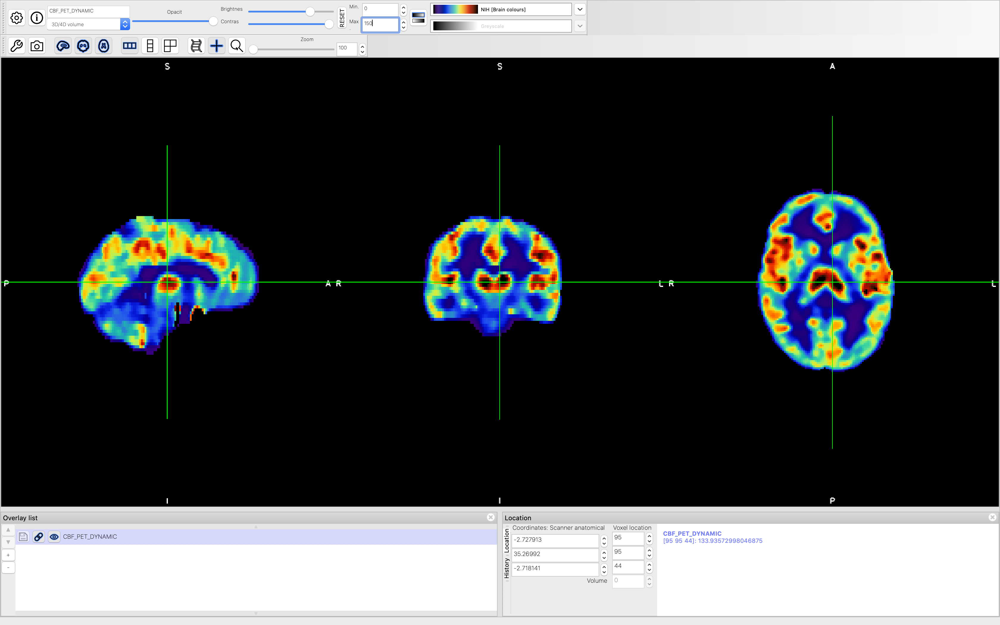

CBF Quantification¶
Introduction¶
The goal of this section is to compute voxel-wise CBF using the data that we have pre-processed in previous steps. We will also tranform the quantified CBF image from PET space to standard MNI-152 2mm space for group analysis.
CBF Quantification¶
We are going to use the fabber tool to quantify CBF from our dynamic PET data. The process includes 2 steps: (1), we estimate the voxel-wise CBF using Bayesian inference; (2) we apply spatial regularization to improve the CBF quantification.
Step 1: CBF quantification using Bayesian inference. In order to use fabber, we need to provide a list of options that specifies model and scanning parameters. An exmaple option file (fabber_options_PET_DYNAMIC_step_1.txt) has been provided for you. Below is the description of each of the options:
–model=pet_1TCM : Here we are using 1-compartment model
–method=vb : Here we are using variational Bayesian inference
–noise=white : Here we assume the noise of our data is in normal distribution
–data-order=singlefile : Here we are providing a single file to analyze
–aif=signal : Here we specify that the AIF of our dynamic PET is a list of signals
–aif-data=AIF.txt : Here we specify the file name of our AIF file
–time-data=time.txt : Here we specify the file name that contains time of each signal
–allow-bad-voxels : Here we allow bad voxels to improve the robustness of our estimation
Now we can run the command to estimate voxel-wise CBF:
fabber_pet --data=DYNAMIC_4MM_FILTER --output=fabber_output_step1 -@ fabber_options_PET_DYNAMIC_step_1.txt
The file fabber_output_step1/mean_K1.nii.gz is the estimated CBF image in relative units. We can have a look at it in FSLeyes
Step 2: Apply spatial regularization to improve CBF estimation. We will use the estimation results from Step 1 as the starting point to improve our CBF estimation by applying spatial regularization. Here, we will need a different option file (fabber_options_PET_DYNAMIC_step_2.txt) for the fabber command. The new options are:
–method=spatialvb : Here we are using spatially variational Bayesian inference
–continue-from-mvn=fabber_output_step1/finalMVN : Here we use the results from Step 1 to start the estimation in Step 2.
Now we can run the command to apply spatial regularization:
fabber_pet --data=DYNAMIC_4MM_FILTER --output=fabber_output_step2 -@ fabber_options_PET_DYNAMIC_step_2.txt
Calibration¶
After model-fitting using FABBER, the estimated CBF data is in s-1 unit. In general, we often use the unit of ml/100g/min. We can also apply a median filter to remove some of the inpulse noise. Therefore, we will convert the unit using the following command:
fslmaths fabber_output_step2/mean_K1 -mul 6000 -fmedian CBF_PET_DYNAMIC
Now let’s have a look at CBF_absolute file in FSLeyes. The value of each voxel should be in ml/100g/min unit.
Transform from ASL to MNI-152 2mm Space¶
Finally, we can transform the absolute CBF image to MNI-152 2mm standard space using linear and non-linear registration:
applywarp --ref=${FSLDIR}/data/standard/MNI152_T1_2mm --in=CBF_PET_DYNAMIC --warp=fsl_anat_dir.anat/T1_to_MNI_nonlin_field --premat=output_pet_reg/pet2struct.mat --out=CBF_absolute_standard